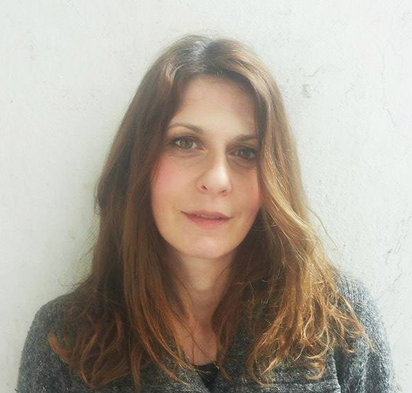

Moja Prica

Zovem se Nada Nikolić. Bila sam talentovano, emotivno i žgoljavo dete i živela u malom stanu u Novom Sadu sa majkom, ocem i sestrom. Bila sam prvi razred osnovne kada sam počela da slušam svađe. Roditelji su se gadno i dugo, dugo razvodili. Selidba za Beograd i preseljenje sa majkom kod bake, uvela je neki red u naše živote. Trudile su se da nam pruže sve što su mogle, ali nisu mogle da izbrišu prošlost. Sećam se da sam često bila bezrazložno uznemirena i preterano uplašeno reagovala na određene situacije. Ustvari, nisam tada znala da sam počela da doživljavam veoma intezivne panične napade. Postala sam zbunjena i agresivna. Svi događaji u mom životu i moja nemogućnost da se na pravi način nosim sa njima, uz moj karakter, stvarali su dobru podlogu za razvitak bilo kog oboljenja.
Jedne večeri, 1995, zamišljena sam sam se vraćala s posla kući. Doživela sa saobraćajnu nesreću, udario me je auto. Pukom srećom ništa nisam slomila i ostala živa, ali sam se na samu pomisao tog dogadjaja tresla kao prut.
Tri meseca nakon toga, zazujalo mi je u uvetu kao i većíni ljudi. Međutim, taj zvižduk se tokom večeri pojačavao. Prilično uplašena sam zaspala. Ujutro je taj zvuk bio tako intezivan da sam se paralisala od straha. Tokom idućeg dana, naglo mi je oslabio vid na jednom oku. Ispitivanjem su otkrili da mam 90% gubitka sluha i nisu znali zašto, ali na pregledu kod oftalmologa, sve je bilo uredno iako sam se žalila na senzacije u oku. Bila sam potpuno zbunjena. Toliko uplašena da ništa nisam jela. Trnuli su mi prsti na šakama i trup kao da sam u nekom oklopu. Sluh se poboljšao ali se nije potpuno vratio. Često sam imala vrtoglavice i problema sa vidom. Žalila bih se na to, ali na pregledima ništa nije bilo primećivano.
Polako su svi počeli da misle da sam hipohondar i da se šale na taj račun…A ja sam samo bila tako uplašena…
Tegobe su bile prisutne i ometale su me u mom poslu. Kao profesor dizajna i ilustrator, nekada nisam bila u stanju da crtam i brzo sam se zamarala. Naučila sam da tako živim.
Venčali smo se ’96. i već sledeće godine nam se rodila predivna ćerkica. Nije dugo prošlo od porodjaja kada su se javile nove tegobe. Svaki novi dan u narednom periodu bivao obojen zebnjom, zabrinutošću i sumnjom u boljitak.
Počinju vrtoglavice koje bi me budile noću i gadno mi trne mi cela ruka… Počela sam da glumim hrabrost ali nisam više mogla da izdržim taj strah! Prihvatam se medicinske enciklopedije i listam bolesti i stanja, sve od slova A. Kada sam stigla do slova M, videla sam jedan tekstić koji opisuje simptome Multiple skleroze… Pročitala sam…Ostala sam tako da sedim zureći u onaj tekst koji je bio toliko tačan. Kao da sam očekivala da se proširi za još jedan pasus u kome će pisati kojim lekom se to izleči… Srce mi je sišlo u pete. Paralisala sam se od straha…Dobrih pet minuta.
Pritisak i uznemirenost su bili tako golemi da sam morala da posetim neurologa. Iznela sam mu sumnju da imam multiplu sklerozu. Posle detaljno urađenog pregleda, konstatovao mi je da imam Karpal -tunel- sindrom- nešto bezvezno, i rekao mi je da stavim tačku na svoje probleme u glavi oko MS-a! Terapija – “Hepatrombin gel”.
Jednog januarskog jutra 2000., probudila se sa utrnutom levom rukom i preponom. proveravala rukom preponu koliko je osećam i da li se utrnutost povećava. Svi oko mene su primećivali moju odsutnost. U jednom trenutku su mi obe noge bile neosetne i teške. Hodala sam, a nisam osećala da hodam. Na ulici bih krivudala sa hodom. Ruka mi je bila kao drvo. Imala sam osećaj bespomoćnosti. Nisam više umela da mislim. Nisam znala šta. Nisam se više žalila. Nisam više nikom ništa govorila. U inat. Ubi me bes i inat. Bila sam besna na sve. Na to što ništa nisam mogla da dokučim, besna što nisam više pametna, što se već 5 godina žalim, a ja nisam više osećala hod. Nisam osećala ni kad mokrim.
Kod kuće nisam uspevala da otkopčam dugmad i da navučem čarapicu na detetovu nogu. Nisam više kupila sitniš u dućanu. A kada bih to slučajno i pokušala, bilo je to toliko sporo da bih osetila na svojim leđima oči nervoznih ljudi u redu i njihove misli koje bi bile tako glasne: ,,Vidi ovu pijanu od ranog jutra…posrće dok hoda i sad, kao, pokušava da sve izgleda dobro pa kupi kusur k’o da zna koliki je. Ne može ni da ga skupi. Sramota!’’ Stalno sam mislila šta drugi misle.
U svoj ovoj teskobi desilo se nešto divno. Bila sam trudna drugi put! Posle dugo vremena bila sam zaista srećna.
Tokom te trudnoće, skoro sve teskobe su prestale i ja sam se osećala blaženo. Bila sam uverena da sam se izlečila! I 2001. sam rodila dečaka, malog andjela. Jednog jutra, pokušala sam da ustanem iz kreveta. Nisam mogla. Telo nije bilo moje. Odveli su me u bolnicu… Likvor, magnetna rezonanca, skener…I desilo se…Dijagnoza- multipla skleroza…
Zapanjujuće je to što su svi bili zabrinuti, a ja sam sam bila u fazonu: ,, E ‘fala Bogu! Dajte mi lek!” A leka nije bilo…Samo male ili nikakve popravke gadnom terapijom kortikosteroida. Nisam odmah shvatila kako može da bude još teže, a ubrzo je postalo. Ono što se u medicini naziva “relapsi” su bili na svakih 6 meseci. Tragala sam za lekom. Potrošila sam mnogo para na Rakije, i biljne tinkture koje ,,leče MS za mesec dana”, elektro terapija, kinezi terapija, Ajurveda (indijska terapija). Bila sam i pokusni kunić na neurologiji za ,,novi” lek. Prestala sam da jedem meso. Topila sam se. Kretanje je bilo jako teško ili nemoguće. Puzala sam od sobe do toaleta. Govor mi je bio otežan. Moje želje i mogućnosti bile su odvojene ambisom… Postala sam depresivna.
Čitala sam mnogo raznog štiva. Još sam 2003. otkrila D vitamin i shvatila koliki značaj ima. Pila D vitamin na svoju ruku po uputstvu Dr. Džona Kanela i Liz Lipski. Tek nakon 7 godina mi je neurolog rekao da, ako nisam do sada, obavezbo počnem da pijem D vitamin u velikim količinama!!! Dragi Bože…Ja sam bila jednu svetlosnu godinu ispred mog doktora!
Naletala sam par puta na članke i emisije o apiterapiji (ubodi pčelama i korišćenje pčelinjih proizvoda). 2003. Gledala sam emisiju o Pet Vagner koja je imala MS, a ubodi pčelama su joj promenili život. Bila sam spremna i na to! I probala sam.
Zamolila sam prijatelja da mi donese par pčela da me ubodu. Svaki dan sam se ubola sa jednom pčelom i… posle sedam dana došlo je do naglog poboljšanja! Uspravila sam se i počela da hodam… spazam je popustio, vratila mi se koordinacija ruku i posle godinu dana sam prvi put podigla svoje dvogodišnje dete! Za mene je to bilo čudo i mislila sam da sam pronašla lek. Prijatelj mi je doneo jednu malu košnicu u stan, a ja sam kontaktirala Pet Vagner i dobila knjigu sa šemom kako da koristim pčelinje ubode. Ali to leto je nastalo pogoršanje i sve se vratilo na staro. Toliko sam psihološki pala da sam dobila od neurologa i antidepresiv. Ponekad nisam imala više snage.
Moja majka (otac je ranije umro) je vešto sakrivala kako se oseća, a znala sam da joj je teško. Ne mogu da zamislim kakva je patnja imati dete sa dijagnozom za koju ne postoji lek. 2005. kupila mi je invalidska kolica. Pomalo sam se plašila da, ako jednom sednem u njih, više nikada neću ustati! Pobodrila me je onako kako je samo ona umela i rekla mi: ,, Njih ćeš koristiti kao prevozno sredstvo da pređeš od kuće do kafića, pa ideš sa mnom na kaficu!”
Moja sestrica mi je kao najlepši poklon na svetu donela iz inostranstva električni mobilni skuter crvene boje koji je postao moj najbolji prijatelj! Sa njime sam stizala gde god sam htela i tako svaki dan. Ta sprava mi je omogućula da se ponovo krećem gradom, da idem u kupovinu i da idem slobodno sa decom u šetnju. Da ne budem zatvorena u četiri zida. Počela sam da primećijem stvari i da uživam. Više da se družim sa prijateljima. Da se opuštam.
Tako sam, igrom slučaja, sa više strana, čula za bioenergetičara Zdenka Domančića u Kranjskoj gori. To je za mene bio znak pored puta i zakazala sam termin. Tamo sam bila u kolicima. Bilo je mnogo bolesnih od raznih bolesti. Ljudi su bili iz celog sveta. Prva rečenica koju sam čula, bila je: ,,Blaženi bili oni koji veruju a ne vide!” Odmah sam je prihvatila, opustila se i odlučila da verujem da će biti bolje, a nisam znala kako radi ta bioenergija.
Posle trećeg dana, odjednom sam osetila kako mi spazam tela prestaje, noge su mi bile pokretljivije a stanje u kome sam se našla bilo je začuđujuće i nestvarno mirno. Sledećeg dana, ustala sam iz kolica i došla na seansu sa dve štake! Bila sam u čudu kako je sve to moguće, a terapeutu koji je sa mnom radio, to je bio iščekivan ishod! Bila sam srećna! U takvom stanju sam se vratila kući.
Moj suprug Draško se odmah zainteresovao za taj oblik lečenja. Pošto je postojala mogućnost da se bioterapija Zdenka Domančića izuči. Napustio je svoj dotadašnji posao građevine i krenuo u ozbiljnu avanturu koja će nam zauvek promeniti živote na bolje! Upisao je i medicinu i završio za diplomiranog fizioterapeuta.
Primenjujući znanje iz medicine i bioterapije, a najviše koristeći se pređašnjim iskustvom življenja sa mnom I sa još nekim nama bliskim ljudima koji su imali tu ili sličnu dijagnozu, Draško je pomogao ne samo meni, već i mnogima koji mogu da posvedoče u to ime. Iz dana u dan, iz godine u godinu meni je bilo sve bolje. Osnova je opuštanje. To u mnogome sputava strah I bombardovanje raznoraznim mislima. U početku je teško prihvatiti da samo od pristupa I načina razmišljanja može da vam bude drastično bolje. Ali pokazivao mi je kakva je razlika kada ja neki pokret ne mogu da izvedem, a samo posle par minuta, kad sam opuštena I fokusirana taj pokret izvedem, polako, lako, bez problema. Jasno mi je predočio da sve od mene zavisi, da preuzmem kontrolu nad svojim životom. Često je išao sa mnom na bazen. Naučio me kako i koliko da vežbam, u stvari kako se primenjuje fizikalna terapija sa neurološkin simptomina. Bitno je bilo da uradim malo, sporo, ali pravilno. Da se cela angažujem. Da ispravljam hod i posturu tela. A onda sam i sama počela da istražujem koliko i šta još mogu.
Ja danas mogu da hodam bez štaka, da vozim bicikl i da provodim kvalitetno vreme sa svojom porodicom, Naučila sam kako da prevaziđem to stanje koje nazivaju MS. Naučila sam kako da oprostim svima i da ih poštujem, kako da oprostim sebi, kako da ne budem ljuta i ogorčena na život. Naučila sam da spoznam sebe i da osluškujem šta je ono što meni treba. Smanjila sam veliki procep između mojih želja i mogućnosti. Što je najvažnije, naučila sam kako da usporim. Ja i dalje učim kako da ostanem ovde i sada, kako da se nosim sa svojim duhovima koji ponekad izlaze i vuku me u nazad. Kuckaju po ramenu i pitaju me ,,Da li se sećaš kako ti je bilo?”
Nema veze jako je bilo. Ima veze kako je sad i kako će mi biti sve bolje!
Tako i Vi.
Zaboravite kako je bilo! Bitno je kako je sada i bitno je šta ćete uraditi sada da Vam sigurno bude bolje!